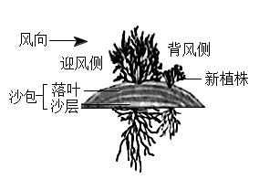

2023年北京中考生物 第28题
28. 柽（chēng）柳广泛分布于荒漠地区，对当地的防风固沙起到重要作用。
（1）如图所示，柽柳在形态结构、生殖方式等不同方面表现出对荒漠环境的适应。

①叶特化成鳞片状，减小了叶面积，避免水分通过______作用大量散失；叶肉细胞中具有较大的______（填结构名称），能够贮存水分。
②发达的根系既利于从干旱的土壤中吸收水和______，又能固定沙土。
③可通过______（填“有性”或“无性”）生殖的方式从被沙层掩埋的枝条上长出新植株。
（2）研究人员对柽柳防风固沙功能进行野外观测，结果如下表。
与灌丛间的距离（米） | 迎风侧 | 背风侧 |
10 | 6 | 2 | 2 | 6 | 10 | 14 |
相对风速（%） | 100 | 92 | 83 | 24 | 68 | 82 | 100 |
注：a．相对风速指测量点风速占空旷地风速的百分比。
b．测量点风速为在柽柳灌丛高度的1/2处，距该灌丛不同距离迎风侧与背风侧的风速。
①据表1分析，为起到防风作用，种植柽柳的最大间距应为两侧相对风速达到______%时，所对应的距离之和。
②随着柽柳的生长，落叶和沙层逐渐堆叠，形成图1所示的隆起沙包，起到固沙作用。可通过测定沙包的______等指标，反映柽柳的生长状况和固沙效果。
（3）综上所述，柽柳既能适应环境，又能______环境。